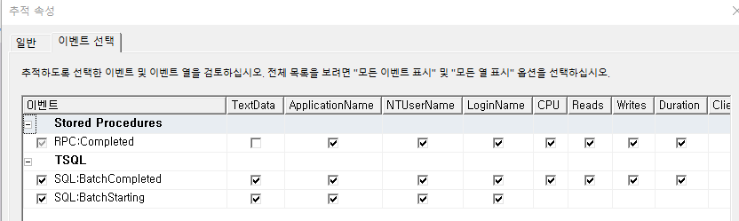
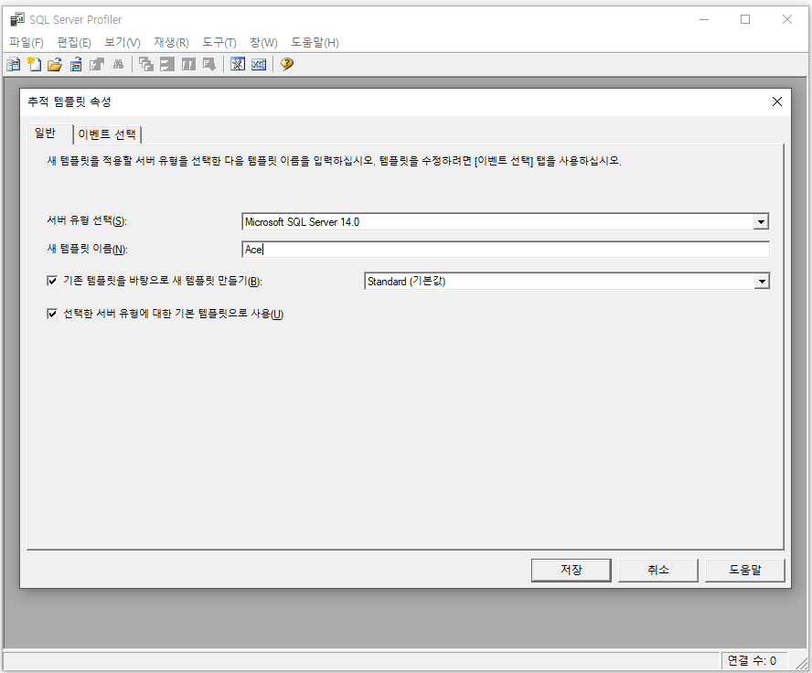
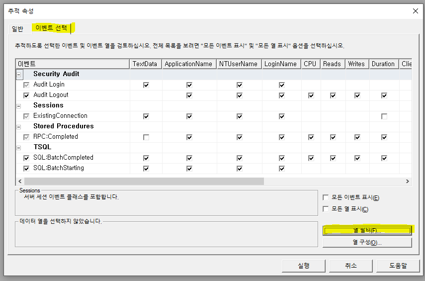

프로파일러

Ace
-
ApplicaitonName
-
%sjpark%
-
%master%
-
%ylw%
-
-
TextData
* 유사
%exec % (맨 끝에 공백)
%OSCACodeHelpQuery %
%_SCACodeHelpComboQuery %
* 유사하지 않음
1. %sp_reset_connection%
2. %design%
3. %_SCAServiceTimeLogSave%
4, %_SCADebugLogParamSave%
5. %_SCAProgramExecuteTimeWrite%
Genuine
-
Standard
-
컴퓨터이름
- 탐색기 - 내 pc - 우클릭, 속성 - 장치이름
+. 원격으로 들어갈 시 고객사꺼 사용
G&I
- 템플릿 사용 : Tuning
- TextData => 유사 : %SP명%
Ace - 프로파일러
1번 서버 – 61.250.183.1.14233


***** 프로파일러 ******
테스트 시 모든 컬럼을 작성 후 테스트
DECLARE\~~ 참조
+. 조회는 입력할게 없어서 output만 있어도 된다
저장은 입력한 값을 알아야하기 때문에 input도 있어야함, 안 뿌리면 공백이기 때문에 output도 필요
intput된걸 그대로 output에도 저장 (orderseq는 아직 0)
디버깅할 때 sp이름 뒤에 _test를 붙여서 임의로 하나 생성
status 값이 매우 중요 – 0이어야 쭉 계속 내려감